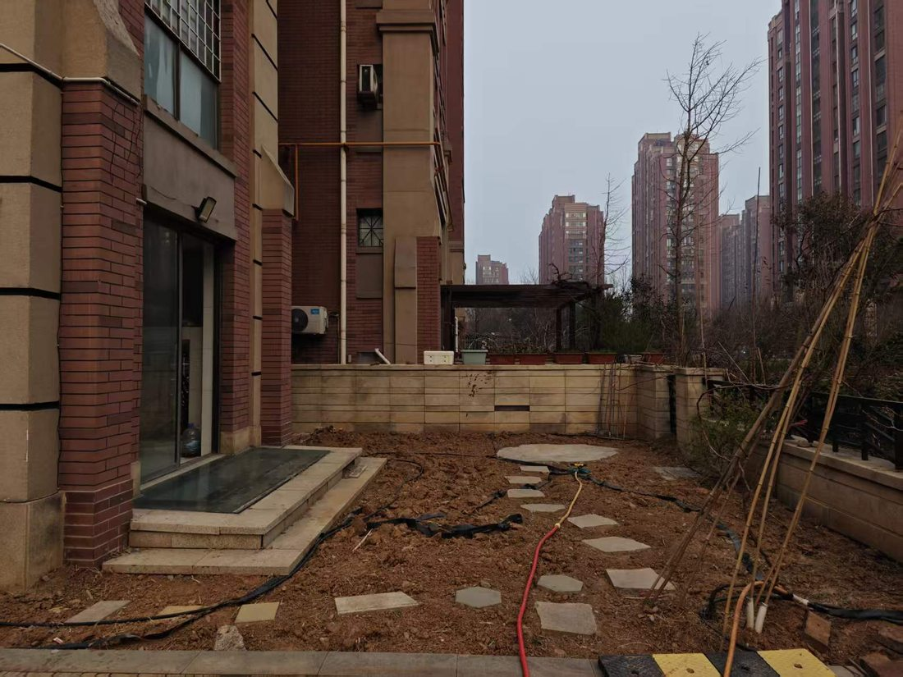
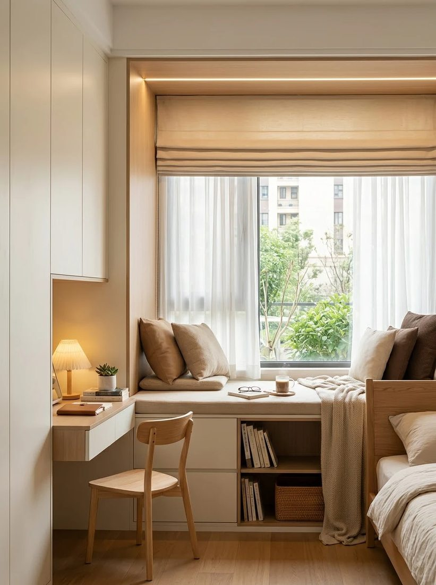

入户评估与方案设计
从老人身体状况、生活习惯和家庭空间出发，评估跌倒、起身、如厕、洗浴等风险。
提交评估需求 ↗先听您说，再一起想办法
不用急着做决定，也不用提前准备方案。告诉我们爸妈在家里哪里不方便、您最担心什么，我们会像家人一样认真听，再一起找合适的改善办法。
家的样子不用改变太多
只是住起来更安心一点
先从最需要改善的生活场景出发，再补充家中情况与联系方式。我们会认真了解需求，不催促、不做过度改造。
从庭院现状出发，探索极简奶油色、原木与绿意。先把通行、高差与休息想清楚，再一起商量家的新样子。

优先核查高差、地面防滑、排水与通行路线。

室内参考图，非该户型完工实拍。具体适老设施需结合现场设计。
同角度设计效果与改造短片将在补充现场素材后更新。
我家也想这样改善 ↗这是一个温和的自测工具，帮助您把“好像有点不方便”变成可以讨论的具体问题。选择房间、勾选看到的情况，就能得到一份初步的改善优先级。
不需要一次解决所有问题。我们会先帮您排出一个更值得优先讨论的小步骤。
我们不追求千篇一律的“标准答案”。先了解长者的身体状况、生活习惯、家庭关系和空间限制，再和家人一起确定真正有帮助、愿意使用的改造方案。
和我们聊聊家中情况 ↗适老化改造不是把家变成医院，而是让长者在熟悉的家里，走得稳、坐得起、洗得安心、夜里看得清。
从第一次沟通、上门了解，到方案讨论与后续使用，我们希望让长者感到被尊重，也让子女少一些担心，多一些踏实。
把家属会搜索、老人会关心的问题写清楚，让居家适老化改造与银发经济服务更容易被找到、被理解、被咨询。
通过对家庭空间、设施和动线进行改善，减少老年人在家中跌倒、磕碰、起身困难和夜间看不清等风险，让日常生活更安全、便利、舒适，也更有尊严。
不一定。很多改造可以在风险发生前提前准备，例如卫浴防滑、连续扶手、夜间照明和清晰动线。越早了解家庭情况，越有机会用更温和、适合的方式改善。
适老化不是把家变得冰冷或像医院。我们会尊重原有生活习惯和审美，在可行范围内优先采用轻量、实用、容易使用的改善方式。
可以先告诉我们长者日常遇到的不方便、所在城市、房屋大致情况和希望改善的地方。不必一开始就做决定，我们会先听你说。
不需要懂装修，也不需要一次说清楚。哪怕只是“妈妈洗澡时有点站不稳”，我们也愿意从这一件小事开始听。